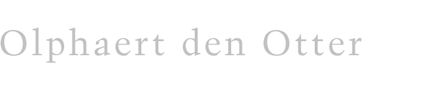

Van Olphaert den Otter
2013 - > Museum Boijmans, 20 januari 2013. De Hemel boven Van Eijk Download PDF ->
2010 - > Museum Belvédère, Heerenveen, op 28 september 2010. Download PDF ->
2009 -> Bij de tentoonstelling rond Geertgen tot Sint Jans in de Vishal
in Haarlem. Download PDF ->
2009 -> Alles of Niets. Download PDF
->
2008 -> Verf/Kleur. Download PDF ->
2003 -> Particuliere Bezetenheid. Download
PDF ->
2002 -> Nieuw Prospect van Rotterdam. Download
PDF ->
1999 -> Brief aan Philipp Otto Runge. Download
PDF ->
1993 -> Je weet niet wat je ziet! Download
PDF ->